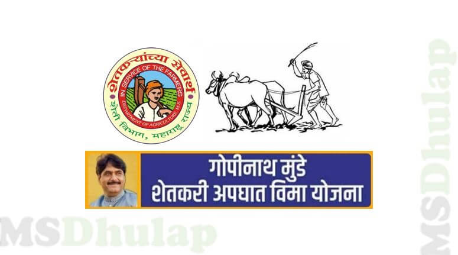

Farmers are prone to various accidents while performing farming business. Due to death/ disability of earning head of family the family members of farmers have to face critical financial situation.The said scheme will be applicable for 24 hours of every day during the prescribed period.
Farmers who are registered account holders and any 1 member of farmer's family who is not registered as registered account holder shall remain eligible for benefits under the scheme even if any of these persons suffer an accident or disability.
Benefit
The benefits in the form of compensation provided:
I)Death - Rs. 2 lakhs
II) Disablement - Rs. 1 lakh /- or 2 lakhs
a) Loss of one limb or one Eye - Rs. 1 Lakhs
b) Loss of two limbs or two Eyes- Rs. 2 lakhs
c) Loss of one limb and one Eye - Rs. 2 lakhs
Eligibility
1.Registered farmer in the age group of 10 -75 years.
2.Person registered as farmer in Maharashtra as evidenced by 7/12 extract.
3.All 1.52 crore farmers of the state and one family member from their family.
Documents Required
1. Person registered as farmer in Maharashtra as evidenced by 7/12 extract.
2. Village form No. 6 – D (Fer-far).
3.Village form No. 6 – C.
4. Age proof evidence by birth certificate or School leaving certificate, etc
5.Death certificate
6. First Investigation Report (FIR)
7.Inquest Report / Panchnama
8.Post-Mortem Report / Panchnama
9.Viscera Report
10.Dis-ability Certificate
Application Process:
Step 01: Concern accident farmer / heir of the farmer should submit complete claim proposal with all the prescribed documents to the concerned Taluka Agriculture Officer within 30 days.
Step 02: After receiving preliminary information about the accident victim, a team of concerned revenue officer, police officer, taluka agriculture officer should visit and submit the report to Tehsildar within 8 days from the occurrence of the incident.
Step 03:The Taluka Agriculture Officer should scrutinize the claim proposals received and submit the eligible claim proposals to the concerned Tehsildar.
Step 04: In the committee meeting under the chairmanship of Tehsildar, a decision will be taken within 30 days to provide assistance to the farmers / heirs of the farmer family and after that the funds will be paid through ECS to the bank account of the accident affected farmers / heirs through the concerned Taluka Agriculture Officer.